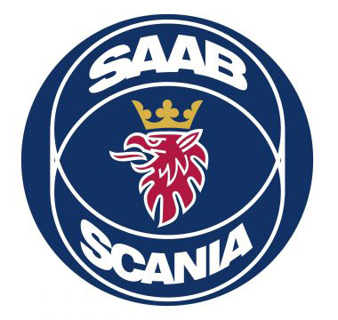

Uma das líderes mundiais na fabricação de caminhões pesados, ônibus, motores industriais e marítimos.
A empresa iniciou suas atividades em 1891 em Södertälje, na Suécia. Hoje são cerca de 41 mil
colaboradores em mais de 100 países, trabalhando nas unidades de produção, vendas e serviços.
As unidades fabris estão localizadas na Europa e na América Latina.
Presente no Brasil desde 1957, naquela época no bairro do Ipiranga, em São Paulo, teve o seu primeiro
caminhão fabricado no ano seguinte.
Cinco anos depois, São Bernardo do Campo, no ABC Paulista, foi a cidade escolhida pela Scania para
construir a planta brasileira, a primeira fora da Suécia.
A Scania Latin America está localizada numa área de mais de 400m², e é a única planta fora da matriz a
produzir o produto completo. Na unidade, mais de 4000 colaboradores atuam nas Fábricas de Cabinas,
Chassis, Motores, Transmissão, além da área de Pesquisa & Desenvolvimento e áreas administrativas,
produzindo e exportando veículos e componentes para toda a América Latina, África, Ásia e Oriente Médio.
Em 1976 foi inaugurada a unidade de Tucumán, na Argentina, especializada na produção de peças de
transmissão que são exportadas para atender o mercado da Scania na América Latina e na Europa.
NOSSOS VALORES
Nosso sucesso se baseia em valores fundamentais: o cliente em primeiro lugar, respeito pelo indivíduo,
eliminação de resíduos, determinação, espírito de equipe e integridade. Eles refletem nossa jornada em
direção a um futuro mais sustentável e um papel no ecossistema. Esses valores continuarão a ser
essenciais para a maneira como administramos a empresa, construindo uma liderança global em transporte
sustentável.
SCANIA LOGO
Scania é o nome de uma empresa sueca de fabricação de caminhões, fundada em 1911. A empresa é altamente
reconhecida e respeitada em todo o mundo por seus caminhões, motores e ônibus de alta qualidade.
Significado e história
Uma das principais empresas automobilísticas suecas, a Scania, recebeu esse nome após a área na Suécia,
onde a marca foi estabelecida. Ele tem uma história rica e a evolução do logotipo é uma boa ilustração
de todos os marcos da Scania.
1901-1911
O primeiro logotipo da Scania era composto por um guindaste estilizado para pedais de bicicleta, com a
cabeça de um grifo.
As letras douradas do “Maskinfabriks Aktiebolaget Scania” foram colocadas ao redor do perímetro do
círculo azul, com a palavra “Malmö” acima da cabeça do grifo.
1911-1954
Em 1911, a Scania se fundiu com a VABIS e a empresa redesenhou seu logotipo. A cabeça do grifo ficou
maior e mais brilhante, enquanto a marca da palavra foi alterada para “Aktiebolaget Scania-Vabis” e
apresentava letras ampliadas e mais ousadas.
1954-1969

Alguns anos depois, o logotipo da Scania-Vabis muda sua paleta de cores para um azul profundo, o que faz
as letras douradas da fonte serif se destacarem e a cabeça do grifo vermelho – parecer mais forte.
1969-1984
A Scania se funde com a Saab em 1969 e o nome da empresa muda para Saab-Scania. No entanto, os carros da
marca usam a marca simples “Scania” para seus logotipos.
As letras maiúsculas azuis da placa de identificação são executadas em uma fonte sem serifa, com linhas
em negrito claras. A fonte parece elegante e moderna em sua simplicidade. A rica cor azul evoca um senso
de profissionalismo e alta qualidade.
1984-1995

A base do logotipo que conhecemos hoje foi projetada em 1984 por Carl Fredrik Reutersward. Era composto
por um emblema circular com a cabeça de grifo aumentada e duas elipses em linhas finas.
A marca da palavra foi dividida em duas partes: “Saab” foi colocado acima do grifo e “Scania” – além
dele.
A paleta de cores da marca tradicional permaneceu intocada – o fundo azul com um mascote vermelho e
letras brancas fez o logotipo parecer elegante e elegante, refletindo a autoridade e a confiança da
marca.
1995-2017
Em 1995, a Saab e a Scania se tornam duas empresas diferentes, a Scania agora é independente. A marca
decidiu modernizar o tradicional logotipo da manivela, mantendo os elementos básicos.
O emblema é refinado e a marca de palavra agora é colocada embaixo, sem sobrecarregar a imagem da
mascote. A Scania usa o tipo de letra de 1969 para a placa de identificação e o logotipo parece forte e
nítido.
2017 – Hoje
Em 2017, o logotipo da Scania foi redesenhado levemente pela agência Brand Union, que atualizou o icônico
grifo e o tipo de letra personalizado da marca de palavra.
O emblema griffin agora parece mais tridimensional e a nova fonte adiciona características únicas à
marca.
É um logotipo poderoso e moderno, que mostra a herança da marca e celebra sua autoridade e experiência.
O emblema
O icônico grifo Scania é executado em vermelho e tinha duas versões da cor da coroa durante sua história:
ouro e prata.
A combinação de vermelho e dourado adicionou mais realeza e coragem à marca, enquanto a nova coroa de
prata faz do grifo um símbolo de força, velocidade e confiabilidade.
A idéia do mascote foi tirada de um dos brasões suecos, mas a marca o fez parecer novo e contemporâneo,
sem nenhum sentimento retro ou histórico, mas com uma forte devoção à herança e às raízes da Scania.
Este é um ótimo exemplo de como o antigo símbolo heráldico pode ganhar uma nova vida e se tornar um dos
ícones mais reconhecíveis da identidade visual da marca de automóveis.